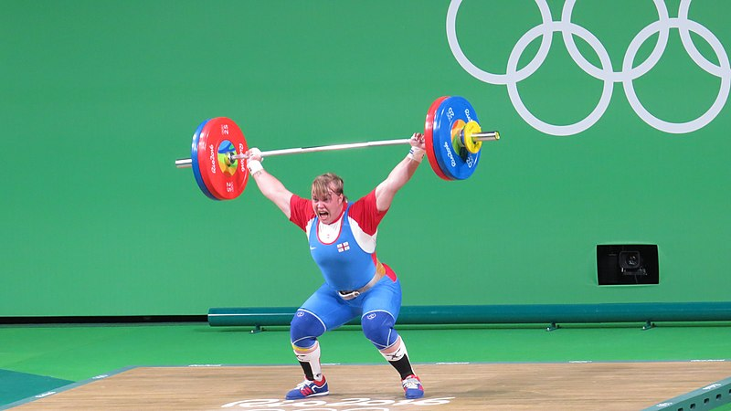
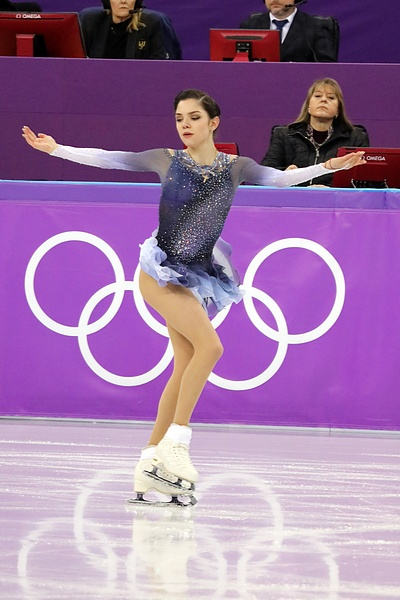
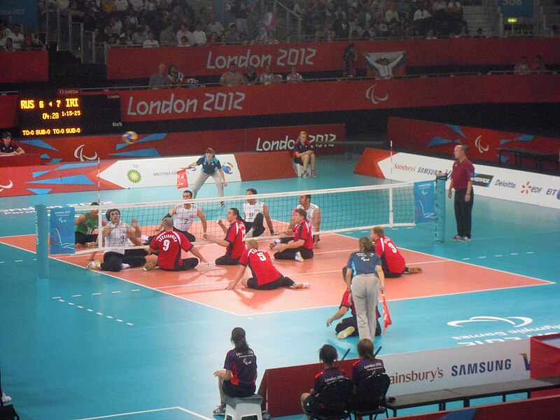

Los Juegos Olímpicos, como evento global de extraordinaria magnitud, abarcan una amplia gama de deportes y disciplinas que dividen en tres categorías principales: los Juegos Olímpicos de Verano, los Juegos Olímpicos de Invierno y los Juegos Paralímpicos. Cada uno de estos eventos tiene sus propias características distintivas y representa una celebración única del espíritu deportivo y la competencia atlética.
Juegos Olímpicos de Verano
Los Juegos Olímpicos de Verano son el escenario de la competencia más mediática y albergan una variedad impresionante de deportes. Aquí, los atletas compiten en una amplia gama de disciplinas. Estos juegos se realizan durante el verano y tienen lugar cada cuatro años, convocando a los mejores deportistas del mundo para competir en un ambiente de camaradería y excelencia atlética.
Deportes de los Juegos Olímpicos de Verano:
El programa olímpico de los Juegos de París 2024 incluye un total de 32 deportes;
Deportes acuáticos (Natación, Maratón, Saltos de trampolín, Waterpolo, Natación artística), Tiro con arco, Atletismo, Bádminton, Baloncesto (3x3, Baloncesto), Boxeo, Breaking, Piragüismo (Piragüismo en sprint, Piragüismo en eslalon), Ciclismo (BMX Freestyle, BMX Racing, Ciclismo en ruta, Ciclismo en pista), Hípica (eventos ecuestes, doma, saltos), Esgrima, Fútbol, Golf, Gimnasia (Gimnasia Artística, Gimnasia Rítmica, Gimnasia de Trampolín), Balonmano, Hockey, Judo, Pentatlón Moderno, Remo, Rugby (Rugby Sevens), Vela, Tiro, Patinaje, Escalada Deportiva, Surf, Tenis de Mesa, Taekwondo, Tenis, Triatlón, Voleibol (Voleibol de Playa, Voleibol), Halterofilia y Lucha (Lucha Grecorromana, Lucha Libre).

Foto de Jonas de Carvalho disponible en Wikimedia Commons
.jpg){kind=link}
Juegos Olímpicos de Invierno
En contraste, los Juegos Olímpicos de Invierno se centran en deportes que se pueden practicar en condiciones invernales. Estos juegos se realizan dos años después de los de Verano y tienen lugar durante el invierno, ofreciendo un espectáculo de destreza y habilidad en la nieve y el hielo.
Deportes de los Juegos Olímpicos de Invierno:
El programa de los Juegos de Milán Cortina 2026 cuenta con ocho deportes y 15 disciplinas.
Biatlón, Bobsleigh (Skeleton, Bobsleigh), Curling, Hockey sobre hielo, Luge, Patinaje (Patinaje artístico, Patinaje de velocidad, Patinaje de velocidad en pista corta), Esquí de montaña, y Esquí (Esquí alpino, Esquí de fondo, Saltos de esquí, Combinada nórdica, Esquí acrobático, Snowboard).

Foto de David W. Carmichael disponible en Wikimedia Commons
{kind=link}
Juegos Paralímpicos:
Por último, los Juegos Paralímpicos son un evento multideportivo destinado a atletas con discapacidades que se lleva a cabo después de los Juegos Olímpicos. Aquí, los deportistas compiten en una variedad de disciplinas adaptadas, como el atletismo en silla de ruedas y la Natación paralímpica. Estos juegos promueven la inclusión y la igualdad, ofreciendo a los atletas con discapacidades la oportunidad de brillar en la escena deportiva mundial.
Deportes de los Juegos Paralímpicos:
Desde el atletismo adaptado hasta el Goalball, los Juegos Paralímpicos incluyen una amplia gama de deportes que abarcan diferentes discapacidades y habilidades. Con categorías específicas para atletas con discapacidades visuales, intelectuales o físicas, estos juegos ofrecen un escenario verdaderamente inclusivo donde la diversidad es celebrada y la excelencia deportiva es universalmente reconocida.

Foto de Someone Not Awful disponible en Wikimedia Commons
{kind=link}